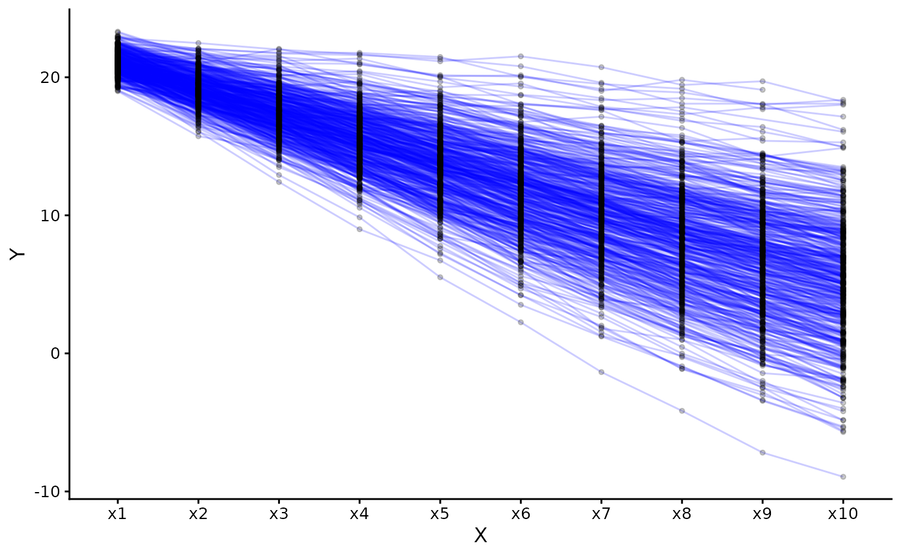
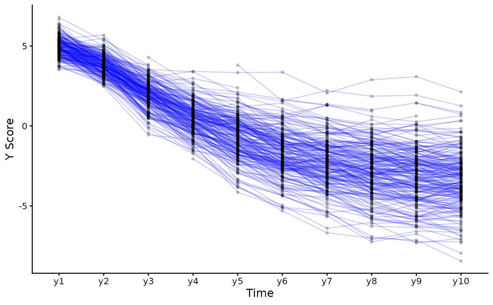

Plot individual trajectories
Usage
plot_trajectories(
data,
id_var,
var_list,
line_colour = "blue",
group_var = NULL,
point_colour = "black",
line_alpha = 0.2,
point_alpha = 0.2,
point_size = 1,
smooth = FALSE,
smooth_method = "loess",
smooth_se = FALSE,
xlab = "X",
ylab = "Y",
scale_x_num = FALSE,
scale_x_num_start = 1,
random_sample_frac = 1,
seed = 1234,
title_n = FALSE,
connect_missing = TRUE
)Arguments
- data
Dataset in wide format.
- id_var
String, specifying id variable.
- var_list
Vector, specifying variable names to be plotted in sequential order.
- line_colour
String, specifying colour of lines.
- group_var
String, specifying variable name of group, each group will get individual colour lines. This overwrites the line_colour argument. Also consider other options to look at trajectories like facet_wrap which may be more appropriate.
- point_colour
String, specifying, colour of points.
- line_alpha
Numeric, specifying alpha of lines.
- point_alpha
Numeric, specifying alpha of points.
- point_size
Numeric, size of point
- smooth
Logical, add smoothed conditional means using geom_smooth.
- smooth_method
String, specifying method to be used for calculating average line, see geom_smooth.
- smooth_se
Logical, specifying whether to add standard error of average line or not.
- xlab
String for x axis label.
- ylab
String for y axis label.
- scale_x_num
Logical, if
TRUEprint sequential numbers starting from 1 as x axis labels, ifFALSEuse variable names.- scale_x_num_start
Numeric, if
scale_x_num = TRUEthis is the starting value of the x axis.- random_sample_frac
The fraction of rows to select (from wide dataset), default is set to 1 (100 percent) of the sample.
- seed
Set seed for random sample if
random_sample_fracargument is used.- title_n
Logical, specifying whether to print title with number and percentage of cases used for the plot.
- connect_missing
Logical, specifying whether to connect points by
id_varacross missing values.
Examples
# Create plot for construct x
plot_trajectories(data = data_bi_lcsm,
id_var = "id",
var_list = c("x1", "x2", "x3", "x4", "x5",
"x6", "x7", "x8", "x9", "x10"))
#> Warning: Removed 260 rows containing missing values or values outside the scale range
#> (`geom_point()`).

# Create plot for construct y specifying some ather arguments
plot_trajectories(data = data_bi_lcsm,
id_var = "id",
var_list = c("y1", "y2", "y3", "y4", "y5",
"y6", "y7", "y8", "y9", "y10"),
xlab = "Time", ylab = "Y Score",
connect_missing = FALSE, random_sample_frac = 0.5)
#> Warning: Removed 58 rows containing missing values or values outside the scale range
#> (`geom_line()`).
#> Warning: Removed 270 rows containing missing values or values outside the scale range
#> (`geom_point()`).
